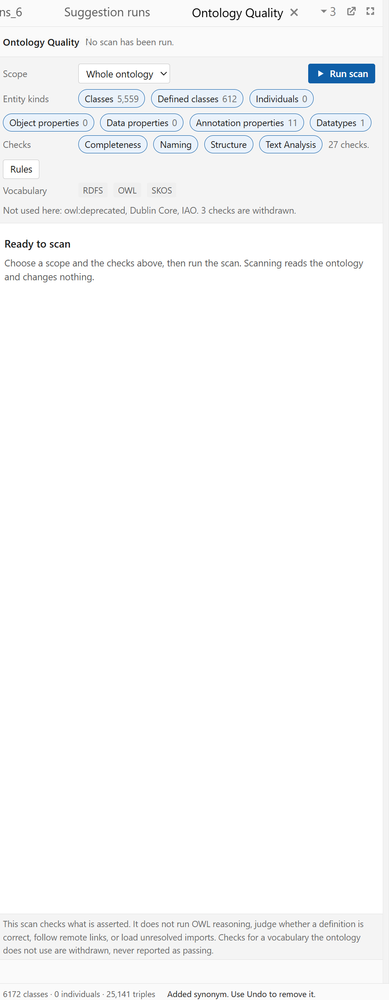
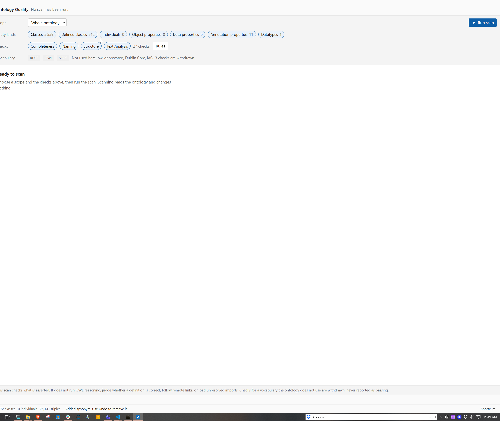

Visual reference for specs/quality-settings/README.md. A picture, not a specification: where this file and the README disagree, the README wins. Requirements in grey are QSS; requirements in amber are QLY, owned by specs/quality/README.md. Frames with a resize grip re tier off their own rectangle, not off the window.


| Measured | 01, narrow | 02, full screen | Required | By |
|---|---|---|---|---|
| Settings rows rendered | 7 | 4 | 4 | QSS-24 |
| Height a row | ~38 px | ~45 px | 32 px | QSS-26 |
| Settings region total | ~266 px | ~180 px | 164 px | QSS-26 |
| Scope control to the action | n/a | ~1,520 px | the next line | QSS-28 |
| Dead width, Entity kinds | n/a | ~816 px | correct beside a capped region | QSS-38 |
| Dead width, Checks | n/a | ~1,258 px | correct beside a capped region | QSS-38 |
| Limits statement | wrapped | 245 chars, 1 line | 101 chars, 2 lines | QSS-46 |
| Controls that cannot be chosen | 3 | 3 | rendered, not selectable | QSS-50 |
| Check groups rendered of six | 4 | 4 | 5 | QSS-55 |
<span class="od-fill"></span>, then the action. od-fill is flex: 1 1 0: a spacer whose declared job is to take whatever width remains. The action is not drifting, it is being pushed, by an element written to push it..srow elements. Capture 01 shows those four wrapping. A reader of the narrow capture alone reaches the wrong conclusion, which is why both captures are in the folder.Four rows at 32 pixels, an action line at 36, capped at 1,040 and aligned left. Drag the corner: the region does not grow past its cap, and below it the rows scroll rather than wrap.
Choose a scope and the checks above, then run the scan. Scanning reads the ontology and changes nothing.
Reads what is asserted. No reasoning, no definition judgement, no remote links, no unresolved imports.
Each state differs from the others by more than colour. Try the controls: the first two toggle, the third does not and says why.
| State | Meaning | Rendered | Selectable | Announced as |
|---|---|---|---|---|
| Selected | In scope for the next scan | yes | yes | {name}, {count}, selected |
| Available | Could be in scope, currently is not | yes | yes | {name}, {count}, not selected |
| Empty | Nothing in the ontology to scan | yes | no | {name}, none in this ontology, unavailable |
| Withdrawn | Its vocabulary is absent from the census | no | n/a | not announced, because not rendered |
Individuals 0, Object properties 0 and Data properties 0 look like live controls and cannot change the result of a scan. QLY-39 permitted that with a MAY while QLY-48 already forbade the same thing for a group chip, so the two requirements disagreed with each other.Retired entities is correctly withdrawn because owl:deprecated is absent. Publication metadata is default off under QLY-65, not withdrawn, and must appear as a control you can switch on. Both are simply missing, which is the collision QLY-74 forbids and never gave a presentation to.One rule: 72 characters a line, everywhere, with a pixel equivalent per type size. The two lines below are the same region before and after.
This scan checks what is asserted. It does not run OWL reasoning, judge whether a definition is correct, follow remote links, or load unresolved imports. Checks for a vocabulary the ontology does not use are withdrawn, never reported as passing.
Reads what is asserted. No reasoning, no definition judgement, no remote links, no unresolved imports.
| Type size | Cap | Characters | Used by |
|---|---|---|---|
| 12.5 px | 440 px | 72 | limits statement, vocabulary note, check count |
| 13 px | 460 px | 72 | secondary body copy |
| 15 px | 530 px | 72 | a state headline body |
The same region at 619 pixels, the width of capture 01. On the left as built, wrapping to seven rows. On the right as specified, four rows whose content scrolls. Drag either corner.
| Band | Height |
|---|---|
| Command bar | 40 px |
| State headline | 28 px |
| State body, two lines at 15 px | 44 px |
| Settings region with its action line | 164 px |
| Limits statement, two lines at 12.5 px | 36 px |
| Status line | 32 px |
| Total | 344 px |
One row, not two. The withdrawal count is a control, and activating it names each withdrawn check and the vocabulary that removed it.
| Where | Reads | Problem |
|---|---|---|
| Entity kinds row | Classes 5,559 | 613 apart, neither accounting for the other. 5,559 plus 612 defined is 6,171, one short, so the two are probably counting named, defined and one more thing. Probably is not a specification. |
| Status line | 6,172 classes | |
As specified: 6,172 classes of which 5,559 named and 612 defined | Each count accounts for the other, and a later completeness percentage has a denominator a reader can check. | |
Six requirements in specs/quality/README.md, five of them written earlier in the same session by the same author against the same pane. Full quotations are in Appendix B.2 of the README.
| Superseded | By | Reason, in one line |
|---|---|---|
| QLY-17 four rows at 32, so 128 | QSS-24 QSS-26 QSS-32 | A budget that assumes rows do not wrap is not a budget. |
| QLY-18 chrome at most 136 | QSS-75 | It budgets the scanned pane and leaves the idle pane, which both captures show, unbudgeted. |
| QLY-21 the per region cap table | QSS-40 QSS-41 | A pixel table drifts as copy changes and silently omitted the limits line. |
| QLY-39 a zero kind MAY be offered | QSS-50 QSS-51 | The permission is what put three dead controls on screen. |
| QLY-45 the limits line is one line | QSS-44 to QSS-48 | One line without a measure becomes a 245 character line at a wide pane. |
| QLY-74 withdrawn and default off differ | QSS-49 QSS-52 QSS-55 | Correct, and never given a presentation, so both resolved to absent. |